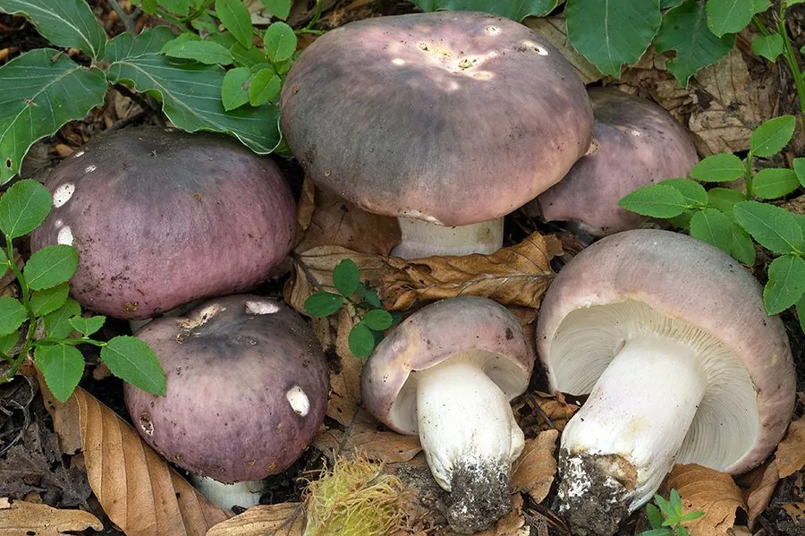

真菌 · 真菌界
花盖红菇 Russula cyanoxantha

红菇科食用菌，菌盖灰紫至蓝绿、色彩多变而柔和，菌褶柔韧不脆，是红菇属中最著名的可食种类之一。
- 分类
- 门担子菌门纲伞菌纲目红菇目科红菇科属红菇属
- 栖息环境
- 阔叶林与混交林地上，与栎类等形成外生菌根
- 地理分布
- 北半球温带阔叶林广布，中国南北各地及欧洲、北美常见
- 保护级别
- 暂无评估；种群数量大、分布广
物种志
花盖红菇的菌盖直径 5–15 厘米，初期半球形，后平展至中央下凹，颜色变化极大，可为灰紫、蓝绿、橄榄绿、灰褐或带紫斑，表面光滑，湿时微黏，边缘老后具条纹。菌肉白色，厚实，质地脆。菌褶白色至乳白，密集，柔韧而不易碎裂，是它与多数红菇的重要区别。菌柄长 4–10 厘米，直径 1–3 厘米，白色，有时带紫晕。孢子印白色。
花盖红菇生于阔叶林或针阔混交林地上，与栎、山毛榉等形成外生菌根，夏秋 6–10 月发生，常成片出现。它是红菇属中最受欢迎的可食种之一，菌肉厚、味道温和，可炒食或炖汤，但必须煮熟。红菇属种类繁多、鉴定困难，许多红菇有辛辣味或引起胃肠炎，采食时应遵循“不认识的坚决不吃”原则，尤其要避开菌褶脆、有辛辣味、菌柄带红或菌盖带明显黏液的种类。
形态与习性
- 菌盖直径 5–15 厘米，灰紫至蓝绿，颜色多变
- 菌褶白色，密集，柔韧不易碎
- 菌柄长 4–10 厘米，白色，有时带紫晕
- 孢子印白色，孢子具小疣
- 生境阔叶林地上，与栎类共生，夏秋成片
- 食用性红菇属著名可食种，须煮熟后食用
趣味知识
- 花盖红菇的菌褶柔韧、弯而不断，而多数红菇的菌褶一碰就碎，这是重要鉴别点。
- 它的菌盖颜色从灰紫到蓝绿、橄榄绿都有，同一片林子里可能长得完全不一样。
- 红菇属是蘑菇鉴定中最难的类群之一，误食辛辣或有毒种类会引起剧烈胃肠炎。
- 红菇属真菌与树木共生，人工栽培极难，市售多为野生采集。